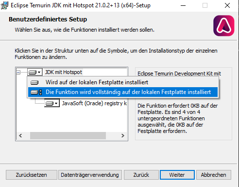
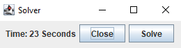

Welcome to the Nonogram Solver! Follow the instructions below to install and use the solver.
To use the program, you first need to install the OpenJDK. This is needed to run Java programs on your system. Make sure to select the options shown in the screenshot below:
Select the installer version fitting your operating system.
For Windows: Download OpenJDK for Windows
For Mac: Download OpenJDK for Mac
Sometimes, macOS blocks apps from taking screenshots. You need to allow it by navigating to:
Preferences -> Security & Privacy -> Privacy -> Screen Recording
Put the `.jar` file in a folder somewhere on your desktop or wherever you want.
You can start it already. A window should pop up looking like this:
Your game needs to be in fullscreen mode so the program can correctly read the numbers on the field.
Start a Treasurehunter puzzle (you should use practice mode to test it first) and navigate to the folder containing the program. Start the solver and press the Solve button.
You have 2 seconds to switch back to Animaljam, then it will start solving the puzzle. Do not zoom into the screen, as it will not work correctly!
If the program doesn't work when pressing the Solve button, check your screen resolution. It has only been tested on 1920x1080p and 2560x1440p. If possible, set your screen resolution to one of these. Slightly different resolutions might also work but haven't been tested.
We hope you find the solver useful. Happy solving!